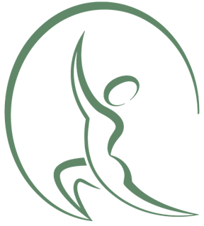
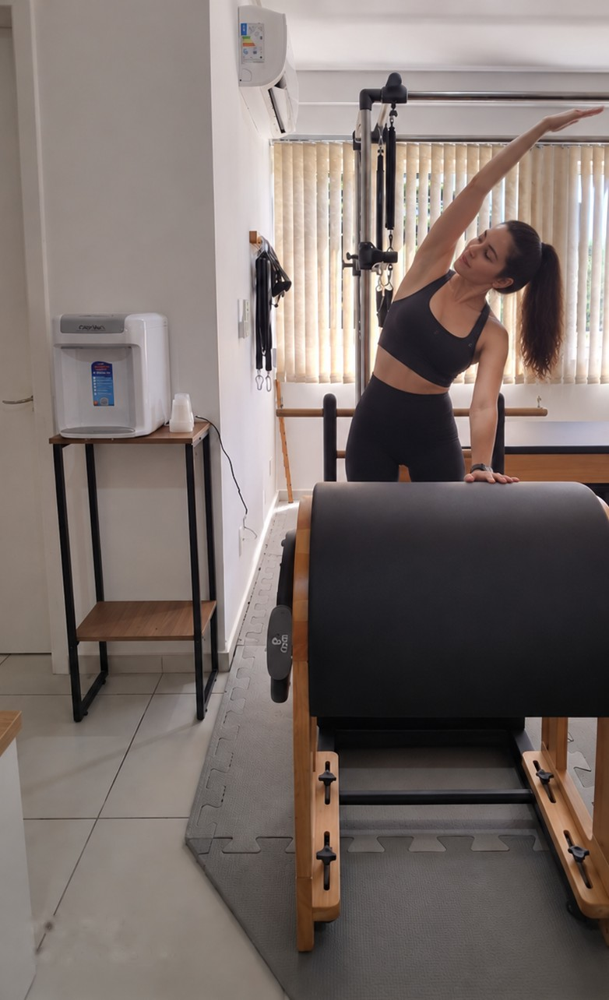
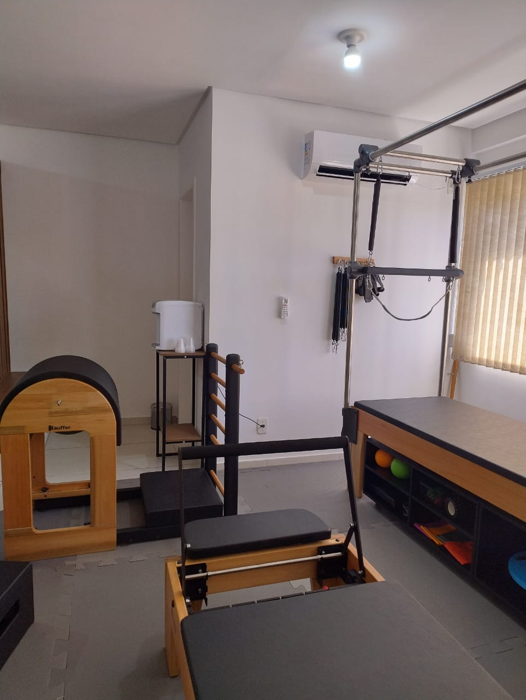

Fisioterapia
Avaliação atenta e um plano de cuidado individualizado para reduzir dores, recuperar movimentos e devolver segurança ao seu corpo.
Falar no WhatsApp ↗
Ana Júlia M. KissmannFisioterapeuta e instrutora de Pilatesmovimento com intenção
Fisioterapia e Pilates em Carazinho-RS para você entender o seu corpo, recuperar confiança e voltar ao que faz bem.

o ponto de partida
Mais do que aliviar um desconforto, o objetivo é construir um caminho possível para você viver com mais liberdade. Cada atendimento combina escuta, conhecimento e exercícios que fazem sentido na vida real.
para onde você quer ir
Do primeiro encontro à evolução contínua, cada etapa tem um porquê.
Avaliação atenta e um plano de cuidado individualizado para reduzir dores, recuperar movimentos e devolver segurança ao seu corpo.
Falar no WhatsApp ↗Prática guiada para fortalecer, alongar e melhorar a consciência corporal. Um jeito mais presente e consistente de se movimentar.
Falar no WhatsApp ↗como posso ajudar

o jeito ana julia
O corpo conta uma história. Por isso, o atendimento começa com uma conversa e uma avaliação que olham para além do sintoma.
Movimento não é sobre fazer mais.
É sobre sentir melhor.
Ana Julia M. Kissmann
fisioterapeuta · instrutora de Pilates
quem já viveu o processo
Experiências compartilhadas por pessoas que confiaram seu movimento à Ana Julia.
dúvidas frequentes
No estúdio da Ana Júlia M. Kissmann, no centro de Carazinho-RS, na R. Quatorze de Julho, 11 - Sala 111.
Não. As aulas são guiadas e adaptadas ao seu corpo, seja você iniciante ou já pratique. O Pilates é indicado para diferentes idades e condições.
Depende dos seus objetivos e da sua rotina. Na avaliação, a Ana Júlia indica a frequência que faz sentido para você.
Começa com uma conversa e uma avaliação para entender o que trouxe você até aqui. Em seguida é definido um plano de cuidado individualizado.
Chame a Ana Júlia no WhatsApp, no +55 54 9215-4016, para saber planos e agendar.
onde estamos
Visite o estúdio Ana Júlia M. Kissmann Fisioterapia e Pilates e conheça um espaço preparado para receber você com calma e atenção.
vamos conversar
Conte um pouco sobre o que você busca. A Ana Julia responde pelo WhatsApp e ajuda você a encontrar o melhor caminho.
Falar pelo WhatsApp ↗
Agendamentos, dúvidas e informações
sobre fisioterapia e Pilates.